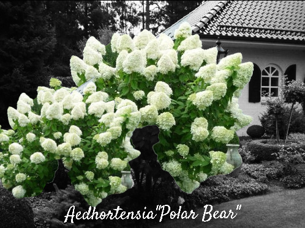
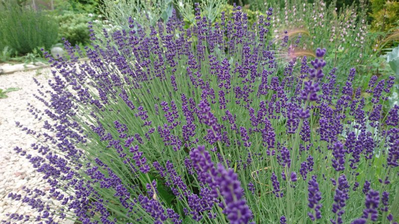
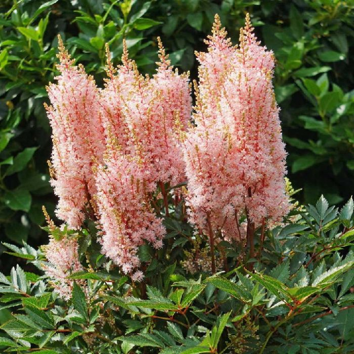

Aedhortensia Polar Bear on ilus ja vastupidav põõsas, mis kuulub hortensiate perekonda. Sellel on suured, valged õied, mis muutuvad õitsemise käigus järk-järgult roosakaks või roheliseks. Polar Bear on eriti hinnatud oma tugevuse ja külmakindluse poolest, taludes ka madalamaid temperatuure. Taim kasvab 1,5–2 meetri kõrguseks ja pakub aedadesse täiendavat ilu suve lõpust kuni sügiseni. Taim armastab päikesepaistelist või poolvarjulist asukohta ja viljakat, hästi kuivendatud mulda. Polar Bear on suurepärane valik, kui otsite aeda, mis õitseb pikka aega ja pakub silmailu ka hilissügisel.
Loe edasi...
Tähiklavendel Munstead on kompaktne ja talvekindel lavendliliik, mis on populaarne oma aromaatsete, sinakas-lillakate õite ja tugeva aroomi poolest. See sort kasvab umbes 30–40 cm kõrguseks ja sobib hästi nii aedadesse, aiapiiridesse kui ka konteineritesse. Munstead on vastupidav kuumusele, kuival pinnasel ja päikesepaistelistes kohtades, olles ideaalne madalakasvuline taim, mis toob aeda värvi ja lõhna suvekuudel. Samuti on see suurepärane mee ja ravimtaim.
Loe edasi...
Astilbe *Look at Me* on dekoratiivne ja silmapaistev mitmeaastane taim, mis paistab silma oma suurtelt roosadelt õisikutelt. See sort on kompaktne, kasvades umbes 30–40 cm kõrguseks, ja sobib ideaalselt varjulisematesse aedadesse või niiskematesse kohtadesse. *Look at Me* talub hästi varju ning pakub kauni värvi ja tekstuuri suve lõpus ja varasügisel. Tema õied tõmbavad tähelepanu, samas kui tema roheline lehtkatt on kaunilt kaunistatud ja lisab täiendavat ilu aeda.
Loe edasi...